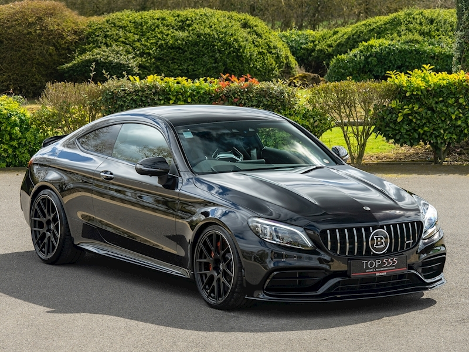
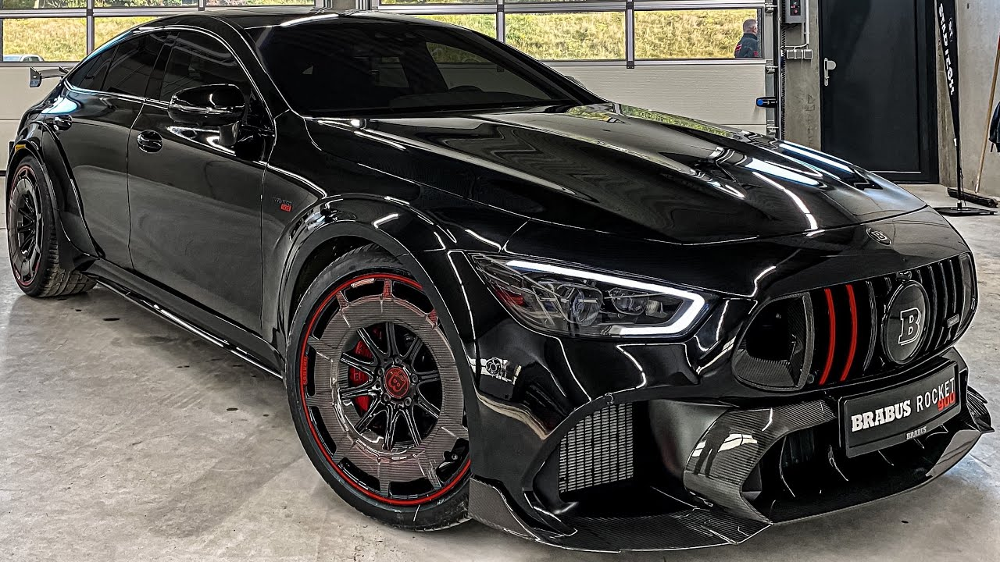

A Brabus egy német tuningcég, amely a Mercedes-Benz luxusautók teljesítményének növelésére és exkluzív módosításaira specializálódott.
A Brabus nemcsak vizuálisan, de technikailag is kiemelkedő autókat készít. A motorokat jelentős teljesítménynöveléssel látják el, ami akár 900 lóerős teljesítményű autókat is eredményezhet, lehetővé téve a rendkívüli gyorsulást és csúcssebességet.
A Brabus egyedi belső kialakítást kínál, amelyben luxusanyagok, például bőr és karbon dominálnak. Emellett az autók külső megjelenésén is változtatnak: sportosabb, agresszívebb vonalakat és nagyobb kerekeket kapnak.
A Brabus által tuningolt Mercedesek egyedülálló élményt nyújtanak mind azok számára, akik a luxust, mind azoknak, akik a teljesítményt keresik egy autóban.
A Brabus G63 a Mercedes G-osztály tuningolt változata, mely jelentős teljesítménynövekedéssel rendelkezik. A modell különösen népszerű a terepjárók között, akár 800 lóerős motorral is elérhető, és robusztus, egyedi megjelenést kapott.
.jpg)
A Brabus CL63 AMG a Mercedes CL-osztály sportkupéjának különleges, tuningolt változata. A Brabus által elvégzett módosítások nemcsak a teljesítményt növelik, hanem a megjelenést is még exkluzívabbá teszik. A motor akár 700 lóerő feletti teljesítményre is képes, lenyűgöző gyorsulással, miközben a belső tér prémium anyagokkal és egyedi dizájnnal van ellátva.
A Brabus CL63 AMG tökéletes választás azoknak, akik egy elegáns, de rendkívül erős luxuskupét keresnek.
A Brabus Rocket 900 az egyik legerősebb modell, általában az S-osztály vagy G-osztály csúcsmodelljeire építve. Ez a változat akár 900 lóerővel is rendelkezhet, lenyűgöző gyorsulással és sebességgel, valamint luxus belső térrel és különleges aerodinamikai elemekkel.
